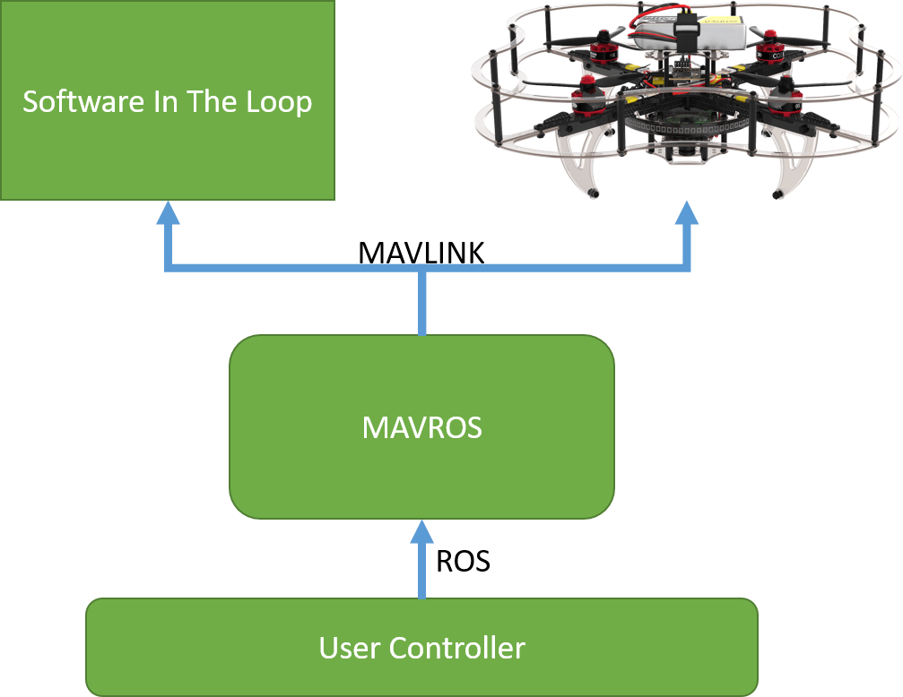
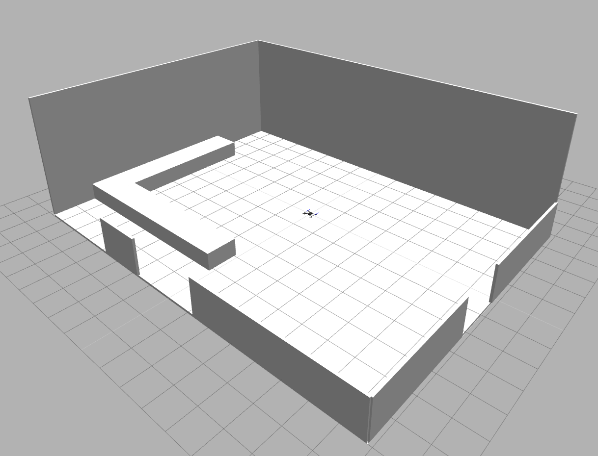
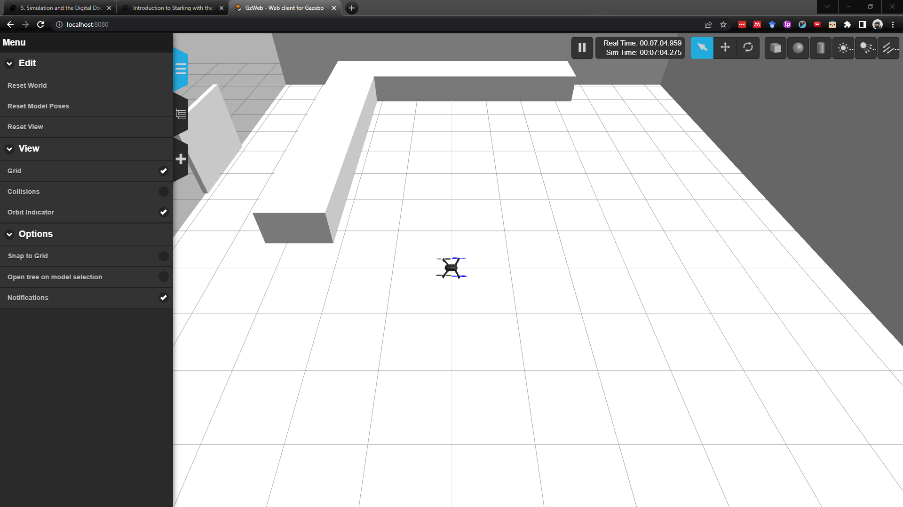
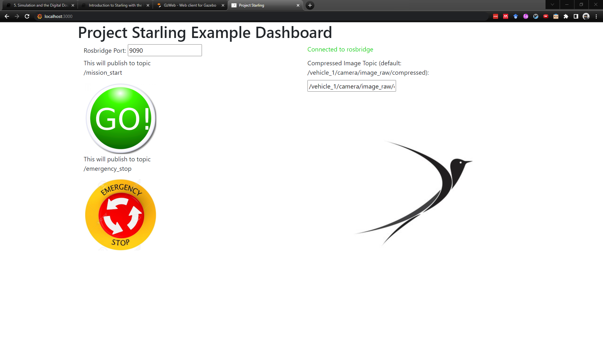

5. Simulation and the Digital Double¶
In this tutorial we will cover how a UAV simulation works and introduce Gazebo, the physics simulator that we use in Starling. By the end you should know the different parts of the simulator and how to run it locally.
5.1 UAV Simulation¶
Often UAV Simulation is solely focussed on trying to recreate the dynamics of UAV flight. In Starling however, we have decided to leave that to the physics simulator experts, and instead focus on the Simulation of systems and architecture involved with UAV flight. This is with the goal to make transferring control from simulation to real hardware as streamlined and straight forward as possible.
In the previous section on UAV control we said that a core part of UAV control is the Autopilot. It is a physical computer which takes sensor inputs to create motor voltages to spin the motor. To re-create this as close as possible, we would like to simulate all of this to ensure that the operation of the uav is as close to reality as possible.
5.1.1 Software in the loop¶
Thankfully, both Ardupilot and SITL can be run as software in the loop or SITL simulation where the flight stack that would run on the autopilot, runs on your local computer.
Simulators allow flight code to control a computer modeled vehicle in a simulated "world". You can interact with this vehicle just as you might with a real vehicle, using QGroundControl, an offboard API such as ROS, or a radio controller/gamepad.
Simulation is a quick, easy, and most importantly, safe way to test changes to your controller before attempting to fly in the real world. It is also a good way to start flying when you haven't yet got a vehicle to experiment with or dont want to damage it.
From a Starling perspective, the MAVROS container does not distinguish between running on a real vehicle or running on SITL as both still speak the same version of MAVLINK. The MAVROS container internally handles connecting to the correct source.

5.1.2 Gazebo¶
Alongisde the SITL, a physics engine is also required for it to run against. Together the simulation is often performed in lockstep where the SITL will generate a motion in one step based on the simulator state, follwed by the simulator advancing by one step based on that motion.
In Starling, we primarily use the gazebo physics and visualisation engine as it is one of the most commonly out there currently in the robotics space.
Starling is designed with simulator modularity in mind, and it's hoped that in the future other simulators will also be supported!
Starling provides a number of containers which have Gazebo pre configured and installed, along with a web based interface for viewing the simulation in progress. In this tutorial, we will be using one container in particular.
5.2 BRL Digital Double¶
As well as simulating the vehicles themselves, it is also important to simulate the environment in which we are operating. For this tutorial we will be flying the Bristol Robotics Laboratory (BRL) flight arena, and therefore we provide a digital double of that space here, and it is contained within the following container:
uobflightlabstarling/uobflightlabstarling/starling-sim-iris-px4-flightarena:latest
This will place you into a space where the exact measurements match the real world version of the flight arena.
Flight arena is 15.6m x 11.8m x 5m (x, y, z) tall, origin is offset by (0.5, 0.7, 0.0) from space center. The coordinate space is x positive is up and y postivie is left (w.r.t the ascii figure).
_________________________________
| |
| |
| |
|_ L|
|C|
| | |
|__|____________ |
|___|_V_|___|___| |
| _____ _____|
|_ _____ ______|__E__|_____|

5.3 Running the local simulator¶
With all of that in mind, we can now run the full simulation of a single UAV in the flight arena locally on your machine.
Go to your new Starling application, and you should see a deployment folder. Inside there exists a docker-compose.yml file. A docker compose file is used to specify the running of multiple containers in one go, instead of having to run a bunch of them manually! To ensure that you have the latest containers, we should pull all of the used ones from docker hub explicitly:
docker-compose -f deployment/docker-compose.yml pull
This can take a while, especially if the internet is slow.
Once downloaded, you can then run the simulator stack with the up command:
docker-compose -f deployment/docker-compose.yml up
If you have downloaded and installed the Starling CLI from Murmuration, you could also run the following (it does the same thing under the hood):
starling deploy -f deployment/docker-compose.yml --pull start
Note: depending on what you also have running, you may receive a port in use error. If it is the port for simhost (8080), rosbridge (9090) or the ui (3000), you can change it as
<local_port>:<container_port>.Note: Stop the simulator with
ctrl+c
Once you have run, you should see a lot of text fly by in the terminal! Hopefully none of it is red...
To access the simulator, go to localhost:8080, and to access the simple UI, go to localhost:3000.


The UI contains a simple Go and Stop button which both send topics of /mission_start and /emergency_stop respectively.
5.4 What is in the local simulation¶
Awesome you now have the local simulator running... but what have you actually run? Let's take you through the docker compose file:
- uobflightlabstarling/starling-sim-iris-px4-flightarena: As mentioned is the gazebo image which contains the model of the flying arena, as well as the model of the UAV. On startup, it spawns the arena and spawns a single vehicle into it.
- uobflightlabstarling/starling-sim-px4-sitl: Is the container which runs the PX4 Software In The Loop mentioned earlier on. Throug the environment variables, it knows to connect to the gazebo container for physics, and then knows to expect the mavros container for offboard commands.
- uobflightlabstarling/starling-mavros: Is the container which runs mavros mentioned in a previous tutorial. It serves as the connection point between the SITL and your own controller code.
- uobflightlabstarling/rosbridge-suite: Is the gateway for web ros applications like the UI to connect to ROS.
- uobflightlabstarling/starling-ui-example: Is the example web application with a simple interface.
5.5 Inspecting the local simulation¶
To verify the functionality of the simulator, we can have a look at some of the ROS Topics that are being sent around. Let us do this by exec-ing into one of the containers. So again:
docker ps
CONTAINER ID IMAGE COMMAND CREATED STATUS PORTS NAMES
ca5384b42f41 uobflightlabstarling/starling-mavros:nightly "/ros_entrypoint.sh …" 8 seconds ago Up 7 seconds 0.0.0.0:5760->5760/tcp deployment_mavros_1
633d71686da7 uobflightlabstarling/starling-sim-px4-sitl:nightly "/entrypoint.sh /bin…" 8 seconds ago Up 7 seconds 0.0.0.0:18570->18570/udp deployment_sitl_1
a462241ba16f uobflightlabstarling/starling-sim-iris-px4-flightarena:latest "/entrypoint.sh ros2…" 9 seconds ago Up 8 seconds 7681/tcp, 11345/tcp, 0.0.0.0:8080->8080/tcp deployment_simhost_1
51adc525e085 uobflightlabstarling/starling-ui-example:latest "/ros_entrypoint.sh …" 29 minutes ago Up 8 seconds 9090/tcp, 0.0.0.0:3001->3000/tcp deployment_starling-ui-example_1
f1208345c980 uobflightlabstarling/rosbridge-suite:latest "/ros_entrypoint.sh …" 36 minutes ago Up 9 seconds 0.0.0.0:9090->9090/tcp deployment_rosbridge-suite_1
Choosing the starling-mavros container, we can exec into that and run the following:
docker exec -it ca5384b42f41 bash
root@ca5384b42f41:/ros_ws# . /opt/ros/foxy/setup.bash
root@ca5384b42f41:/ros_ws# ros2 topic list
/client_count
/clock
/connected_clients
/emergency_stop
/link_states
/model_states
/parameter_events
/performance_metrics
/rosout
/vehicle_1/mavlink/from
/vehicle_1/mavlink/to
/vehicle_1/mavros/battery
/vehicle_1/mavros/distance_sensor/hrlv_ez4_sonar
/vehicle_1/mavros/distance_sensor/lidarlite_laser
/vehicle_1/mavros/distance_sensor/rangefinder
/vehicle_1/mavros/distance_sensor/temperature
/vehicle_1/mavros/extended_state
/vehicle_1/mavros/global_position/global
/vehicle_1/mavros/image/camera_image
/vehicle_1/mavros/imu/data
/vehicle_1/mavros/local_position/accel
/vehicle_1/mavros/local_position/odom
/vehicle_1/mavros/local_position/pose
/vehicle_1/mavros/local_position/pose_cov
/vehicle_1/mavros/local_position/velocity_body
/vehicle_1/mavros/local_position/velocity_body_cov
/vehicle_1/mavros/local_position/velocity_local
/vehicle_1/mavros/manual_control/control
/vehicle_1/mavros/manual_control/send
/vehicle_1/mavros/mission/reached
/vehicle_1/mavros/mission/waypoints
/vehicle_1/mavros/px4flow/ground_distance
/vehicle_1/mavros/px4flow/raw/optical_flow_rad
/vehicle_1/mavros/safety_area
/vehicle_1/mavros/setpoint_accel/accel
/vehicle_1/mavros/setpoint_attitude/attitude
/vehicle_1/mavros/setpoint_attitude/cmd_vel
/vehicle_1/mavros/setpoint_attitude/thrust
/vehicle_1/mavros/setpoint_position/global
/vehicle_1/mavros/setpoint_position/global_to_local
/vehicle_1/mavros/setpoint_position/local
/vehicle_1/mavros/setpoint_raw/attitude
/vehicle_1/mavros/setpoint_raw/global
/vehicle_1/mavros/setpoint_raw/local
/vehicle_1/mavros/setpoint_velocity/cmd_vel_unstamped
/vehicle_1/mavros/state
/vehicle_1/mavros/vision_pose/pose
/vehicle_1/mavros/vision_pose/pose_cov
/vehicle_1/mavros/vision_speed/speed_twist
/vehicle_1/mavros/vision_speed/speed_vector
This list a list of all the topics currently being broadcast onto the system. Similarly we can inspect the current list of nodes:
root@ca5384b42f41:/ros_ws# ros2 node list
/gazebo
/gazebo_vehicle_state_plugin
/motion_tracker_sim
/rosapi
/rosapi
/rosbridge_websocket
/vehicle_1/estop
/vehicle_1/ros_bridge
and many others. We can also have a look at some of the topics. For example, if we wanted to look at the state of a vehicle 1, we would have a look at /vehicle_1/mavros/local_posiiton/pose (Press ctrl+c to stop the stream).
root@ca5384b42f41:/ros_ws# ros2 topic echo /vehicle_1/mavros/local_posiiton/pose
---
header:
stamp:
sec: 1655741007
nanosec: 589603584
frame_id: map
pose:
position:
x: -0.010252323932945728
y: -0.025252731516957283
z: -0.019200336188077927
orientation:
x: -0.0019689216589022533
y: -0.0020565663184938785
z: 0.0005801513697525905
w: -0.9999958103477264
---
header:
stamp:
sec: 1655741007
nanosec: 617603584
frame_id: map
pose:
position:
x: -0.01022176630795002
y: -0.02509368769824505
z: -0.018872130662202835
orientation:
x: -0.0019977603981865205
y: -0.0021082978655832646
z: 0.0006137002611672492
w: -0.9999956417603324
---
...
Have a play around an investigate the other topics!
Finally to stop the simulator, you can simply run ctrl+c in the terminal running the simulator.
5.6 Next Steps¶
This tutorial should have introduced you to how UAV simulation works and the gazebo simulator we use in Starling. It should have also showed you how to run the simulator, so that you can test the controller you will be developing in the next part.